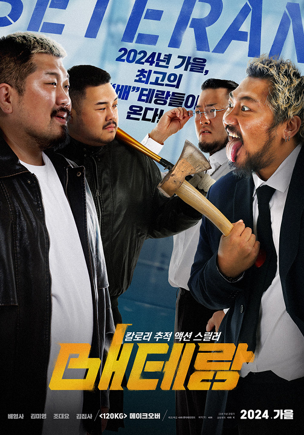

4XR DesignProject
4xr 메이크오버 프로젝트
기여도 : 개인 프로젝트 (100%)
제작 기간 : 6일 (디자인 5일 + 퍼블리싱 1일)
툴 : Figma, Photoshop, Visual Studio Code

Project Vision
메이크오버 프로젝트는 매년 다양한 영화나 드라마를 패러디하여 참여자를 모집하는 행사였습니다. 해당 프로젝트에서는 포토샵을 활용한 이미지 제작이 중요한 역할을 했으며, 기존 자료를 활용해 콘셉트에 맞는 비주얼을 연출하는 것이 핵심이었습니다. 작업 과정에서 패러디 요소를 자연스럽게 녹여내고, 시각적으로 매력적인 디자인을 완성하는 데 집중했습니다. 또한, 수정이 불편한 이미지 형태의 레이아웃을 퍼블리싱으로 수정해 추후에도 사용이 용이하도록 퍼블리싱하였습니다.
- 01 사용자의 공감을 위한 원작 포스터와의 높은 싱크로율 유지
- 02 기존 이미지 레이아웃에서 퍼블리싱을 통한 업무 효율 증가
Design System
Typography
Color
-
#FCBC1D
-
#2A6FB0
-
#000000
-
#FFFFFF